Zagreb (početak chase-a) → Odranski Obrež → Petrinjci (kraj chase-a) → nazad do Zagreba [Ukupno: 175 km]
Nad srednjom Europom se prema istoku kretala dolina, odnosno prodor u sklopu kojeg je u prizemlju bila vezana hladna fronta. Po visini je ispred prodora bilo prisutno snažno jugozapadno strujanje, a prolazak fronte se preko naših krajeva očekivao u poslijepodnevnim satima.
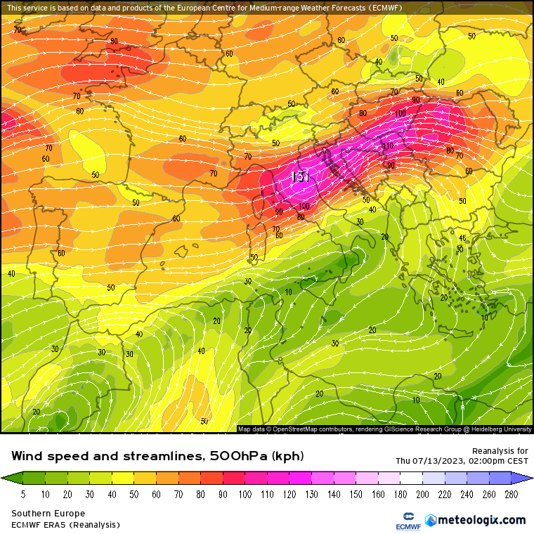Modeli su simulirali konvektivnu energiju u vrijednostima od 1000 do 2000 J/kg u kombinaciji s DLS-om od 25 - 30 m/s. ESTOFEX je za unutrašnjost Hrvatske izdao Level 2 i Level 3 (najviši stupanj rizika).

Moj lov je započeo u Zagrebu nešto iza 14h. U to vrijeme su se već razvile oluje u Sloveniji, a najveći potencijal je pokazala ćelija istočno od Ljubljane koja je u to vrijeme počela jačati.
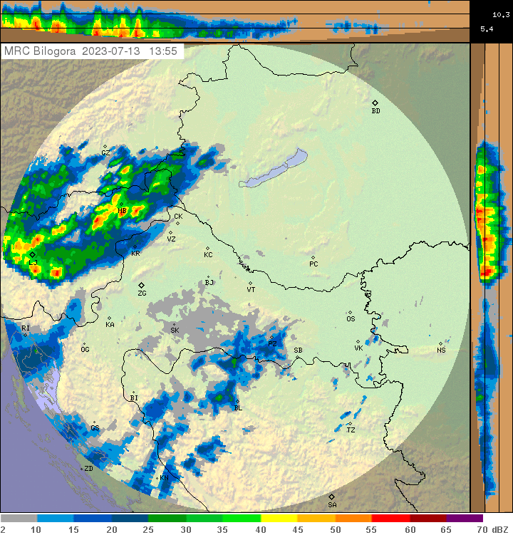Oluje su se kretale brzo, oko 70 km/h, pa sam ju umjesto kod Zaprešića, odlučio presresti istočno od Zagreba kako se kasnije kod praćenja oluje prema istoku ne bi morao brinuti o gustom prometu na obilaznici. Oko 14:55h sam se pozicionirao u Kominu. Oluja je još bila predaleko da bi se vidjela.
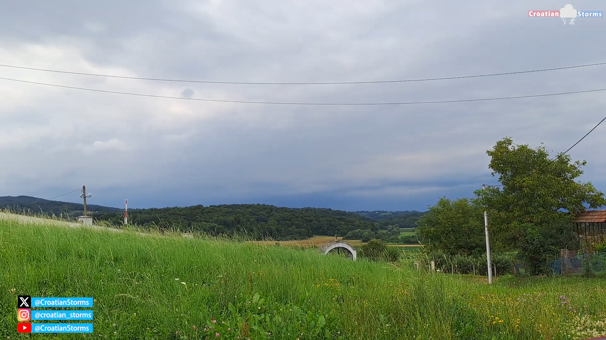15-tak minuta kasnije, nove radarske slike su otkrile da oluja počinje skretati u desno, što je značilo da nisam u dobroj poziciji. Morao sam se repozicionirati južnije. U to vrijeme ESTOFEX izdaje mezoskalnu diskusiju koja obuhvaća cijelu unutrašnjost Hrvatske.
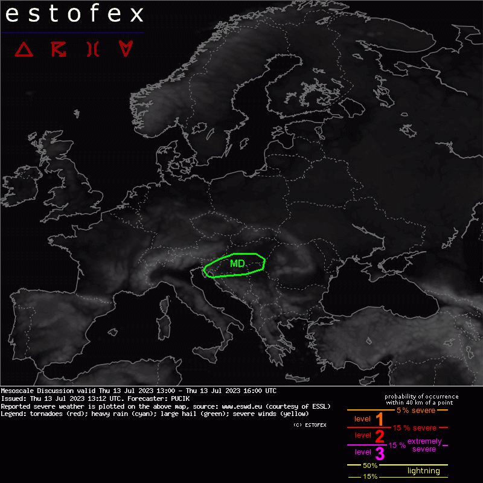U diskusiji se navodi kako superćelije iz Slovenije idu prema Hrvatskoj te se očekuje da će, ili zadržati svoju jačinu, ili još i dodatno ojačati. To je bilo podržano činjenicom da je zagrebačka sondaža u 14h (ispred superćelije) izmjerila vrlo povoljne parametre → SBCAPE 2000 J/kg i DLS 28 m/s.
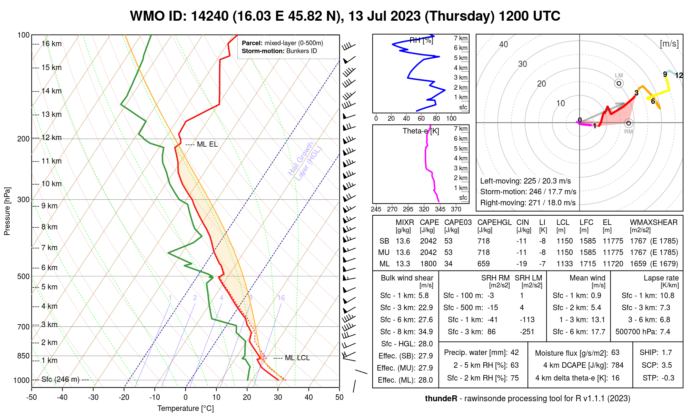Oko 15:30h nalazim se u Popovcu s otvorenim pogledom prema Medvednici i nadolazećoj superćeliji. U to vrijeme ćelija ulazi iz Sloveniju u Hrvatsku, te iako još daleko, počinje se nadzirati južni kraj oluje.
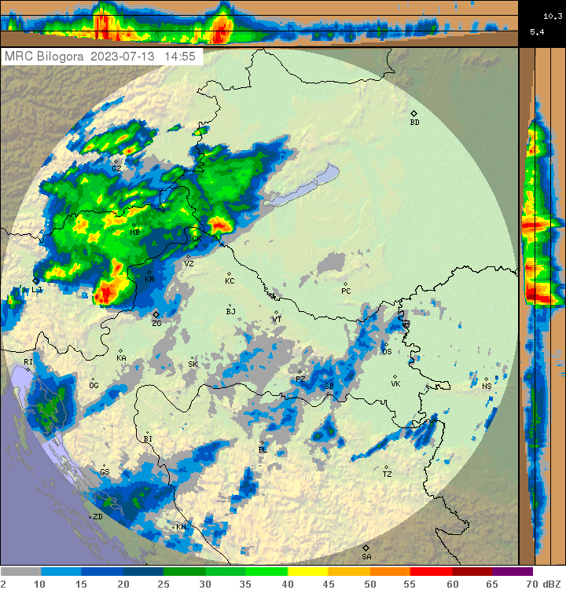 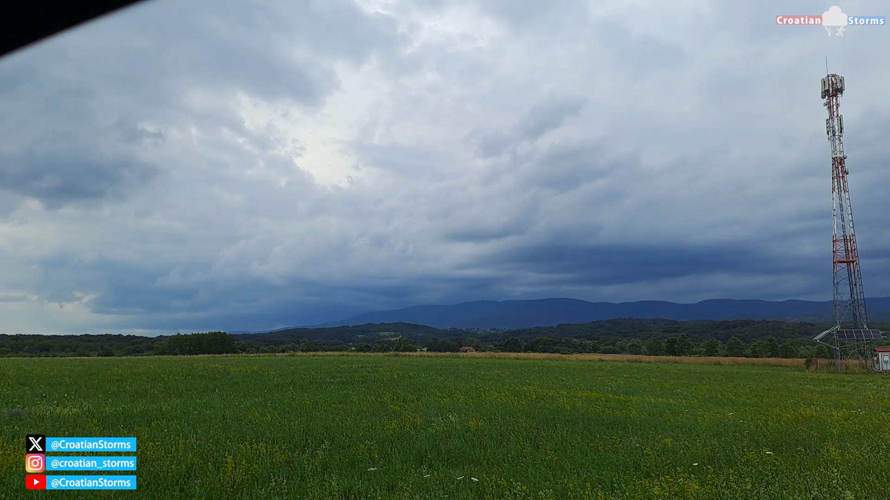Prije nailaska superćelije do glavnog grebena Medvednice, ispod baze oblaka se kratkotrajno razvio wall cloud, pojačavajući njezinu vizualnu strukturu.

Prelaskom preko grebena Medvednice, wall cloud se raspada zbog ometanja inflow-a. Zbog toga superćelija vizualno gubi na strukturi, iako je i dalje jasno vidljva baza i kišno-tučonosne zavjese.
Radar je sugerirao da oluja nije oslabila prelaskom preko Medvednice i nešto prije 16h mi se u potpunosti približila.
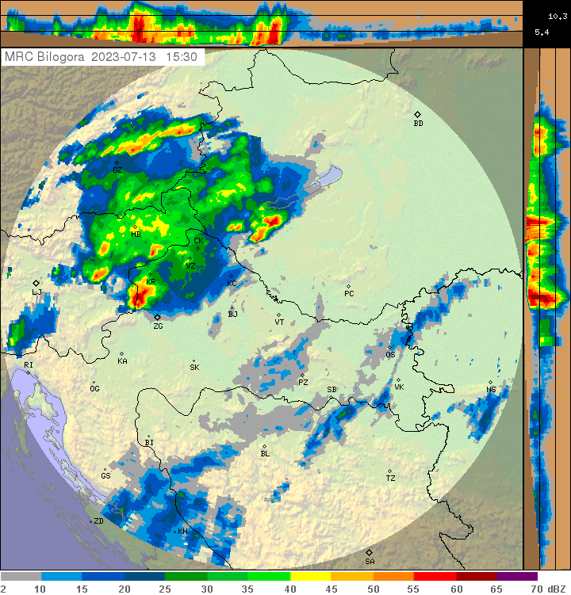U to vrijeme shvaćam da sam napravio grešku zbog previše razmišljanja i neodlučnosti. Greška je bila što nisam na vrijeme krenuo na drugu poziciju. Imao sam opciju nastaviti autocestom i brzom cestom prema Vrbovcu što bi me postavilo ispred superćelije na slijedeću poziciju, ali taj prozor je prošao jer je sada bilo prekasno i oluja bi me zahvatila.
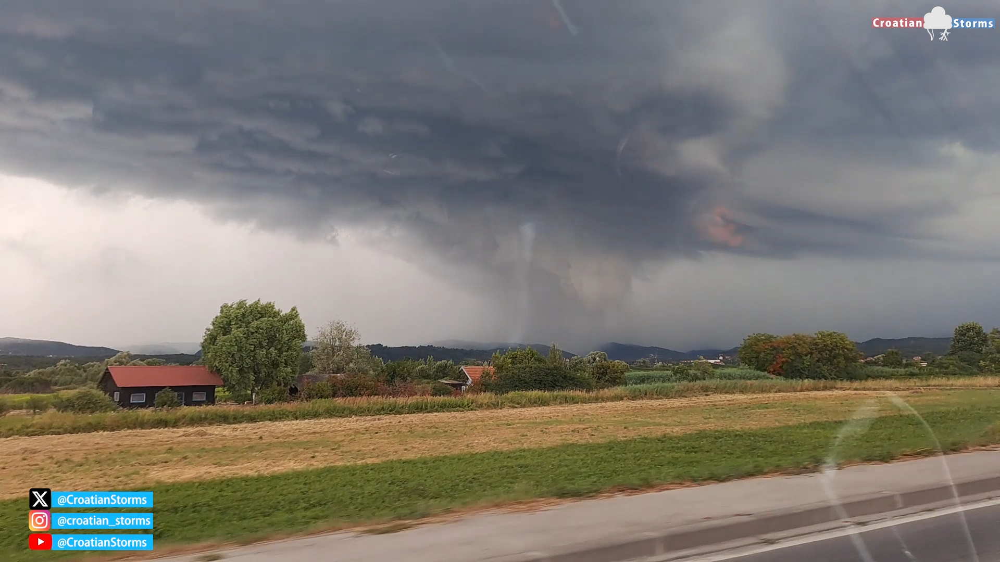Jedina druga opcija je bila ići obilazno autocestom A3 do Ivanić Grada, pa po D43 stići do Čazme i presresti superćeliju između Čazme i Bjelovara. Znao sam odmah da će to biti vrlo teško postići, što zbog prometa, što zbog brzog kretanja oluje. No svejedno sam htio pokušati. Dolaskom do Ivanića, ponovno sam uspostavio vizualni kontakt s superćelijom. Iako teško vidljivo kroz kameru, uživo je bilo jasno da je u zadnjih 20 minuta razvila novi wall cloud ispod baze.
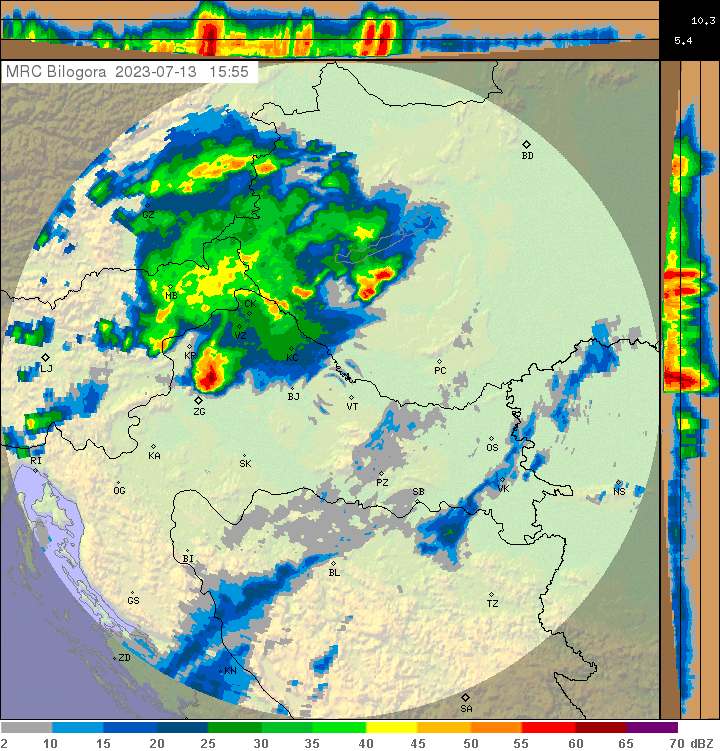 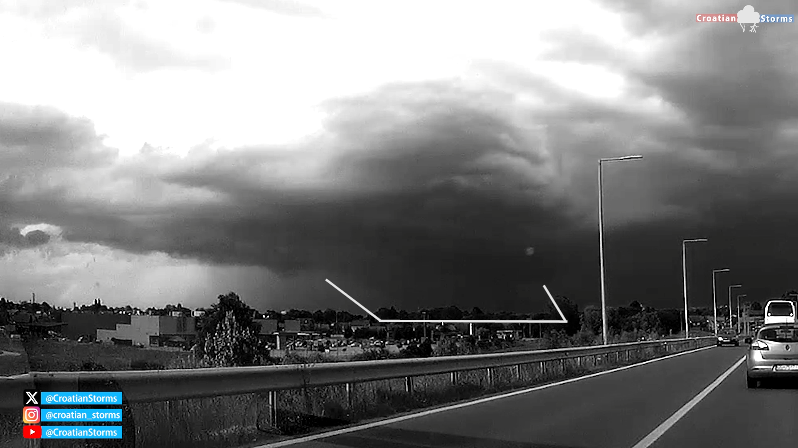Da sam na vrijeme krenuo prema Vrbovcu, mogao sam imati ovakav pogled. Nepoznati autor, slikano iz okolice Vrbovca oko 16:15h:
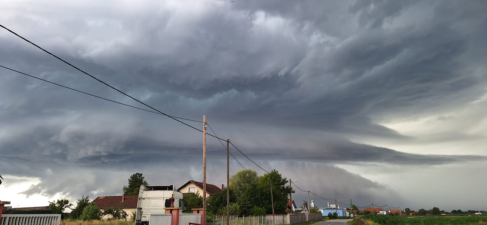Nažalost prilaskom Čazmi shvaćam da ipak neću stići ispred superćelije koja će proći tik sjeverno od Čazme. Stižem u Čazmu u 16:40h i oluja taman prolazi sjeverno od grada. Na desnoj strani se još vide dijelovi baze, a iza nje guste bijele tučonosne zavjese.
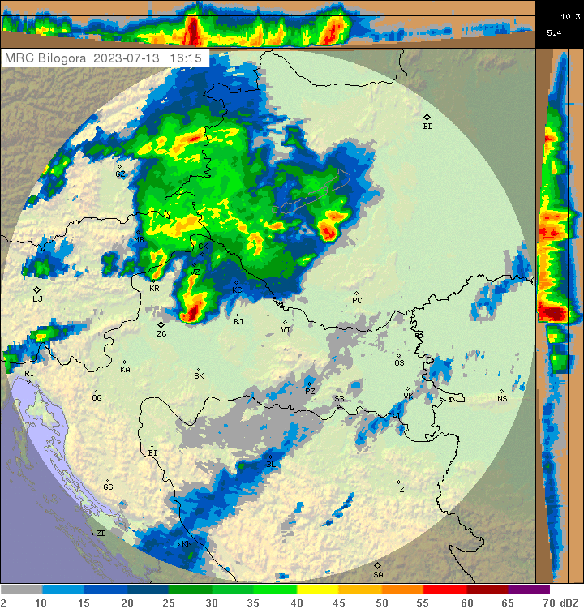 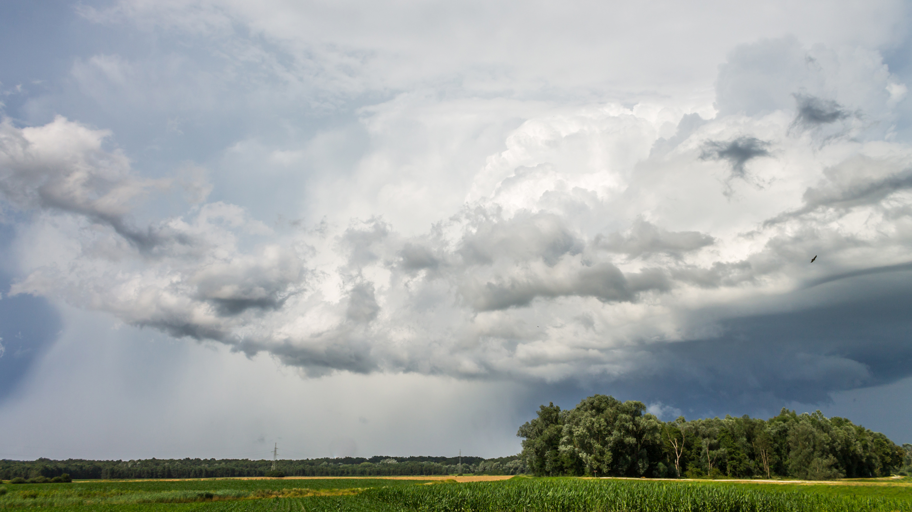U Čazmi sam još ostao neko vrijeme, s lijepim pogledom na stražni dio ćelije i updraft koji je dosezao 12 km visine.
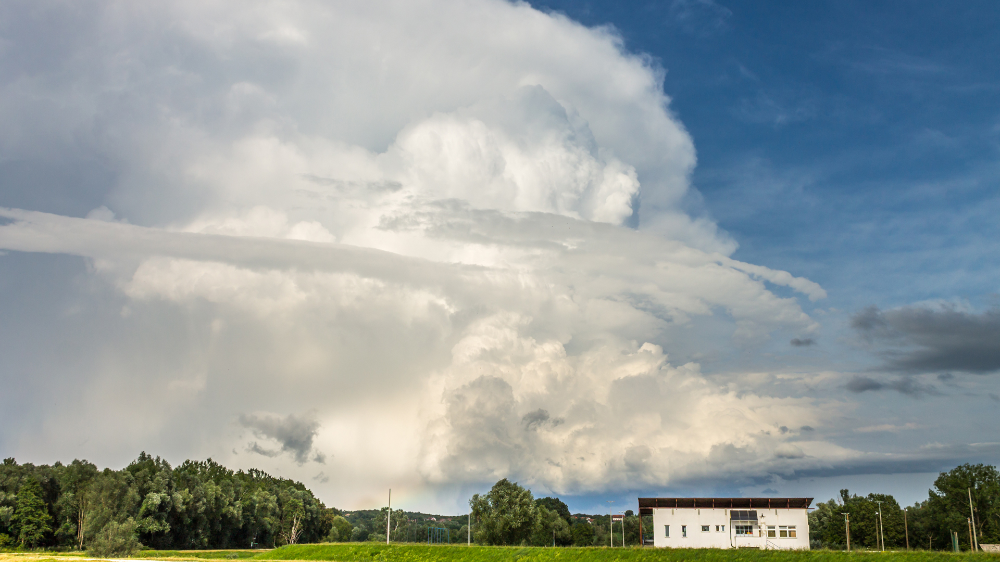Nakon toga je krenuo novi slabiji razvoj u Sloveniji pa sam oko 19h kod Zagreba dočekao slabije ćelije koje se nisu uspjevale konkretno razviti. Ali barem je bilo nekoliko lijepih CG munja.
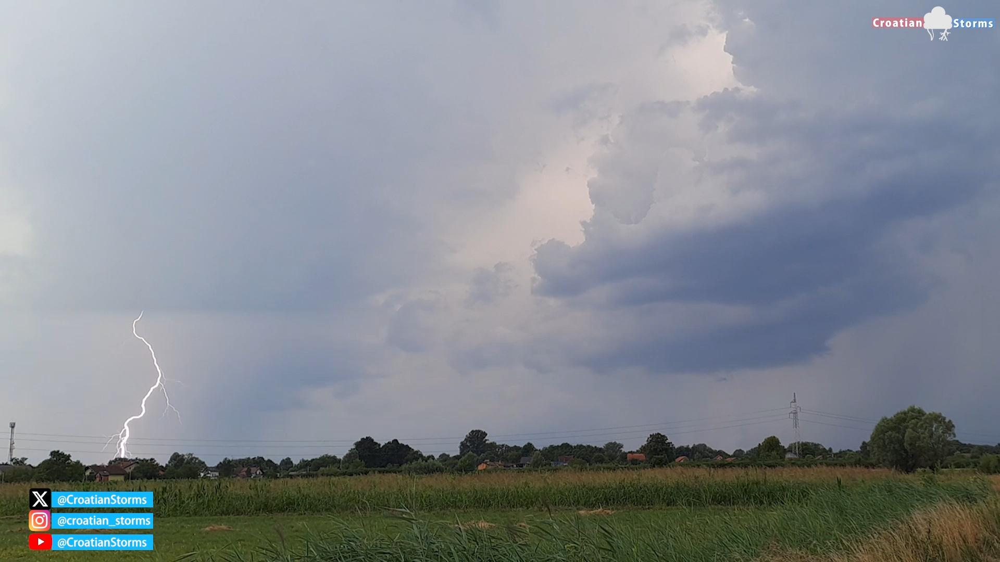Oko 20:30h Zagreb zahvaća jedan slabiji linijski sustav sa shelf cloudom. Ovo je bio kraj chase-a.
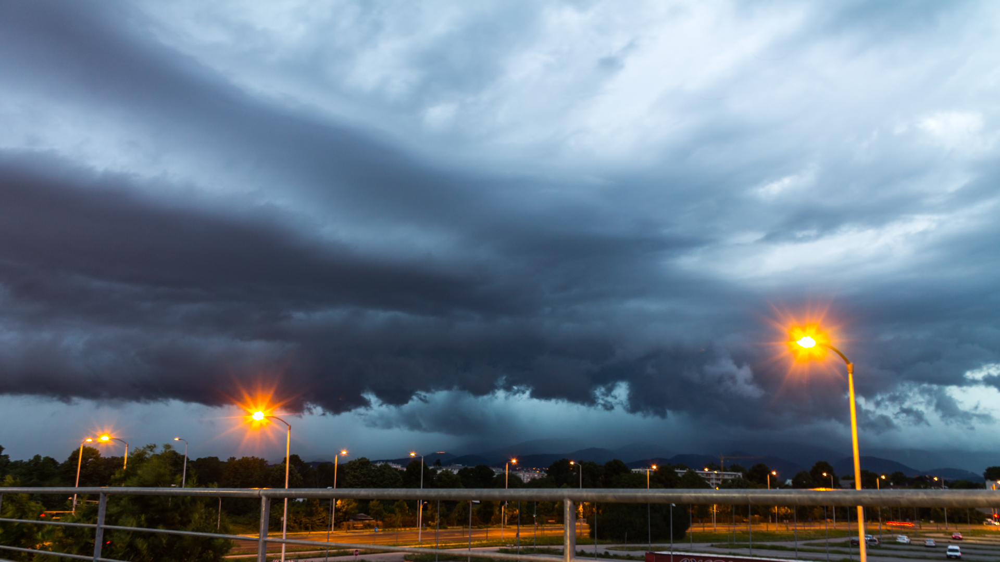